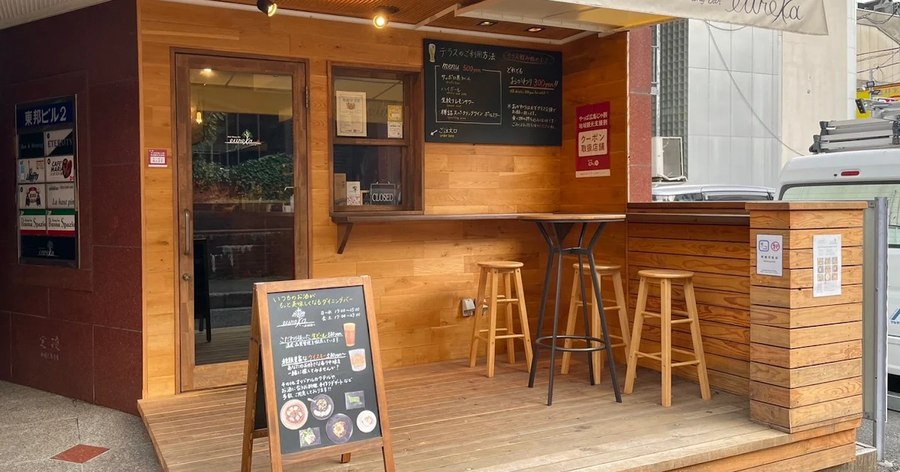
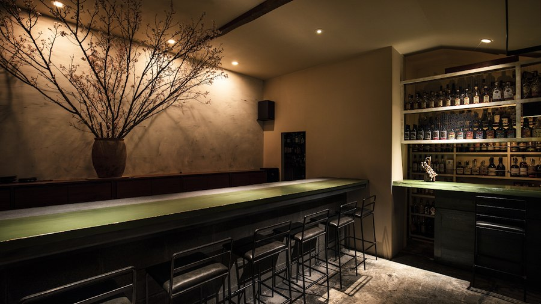
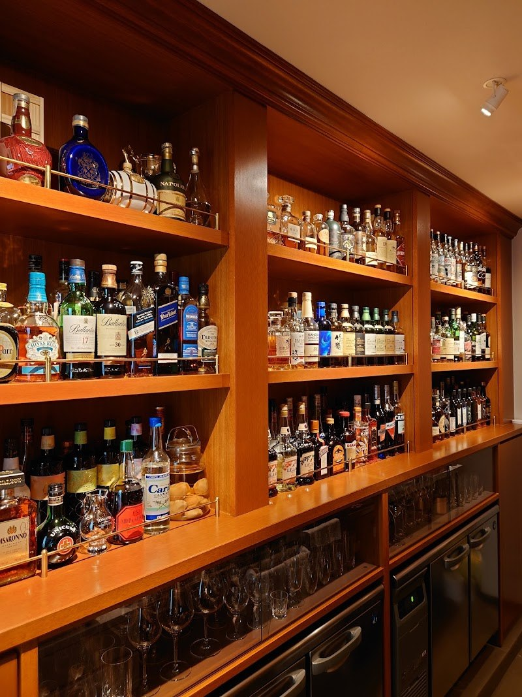
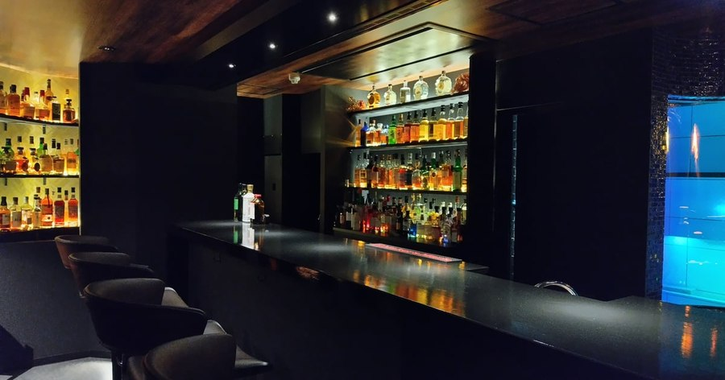
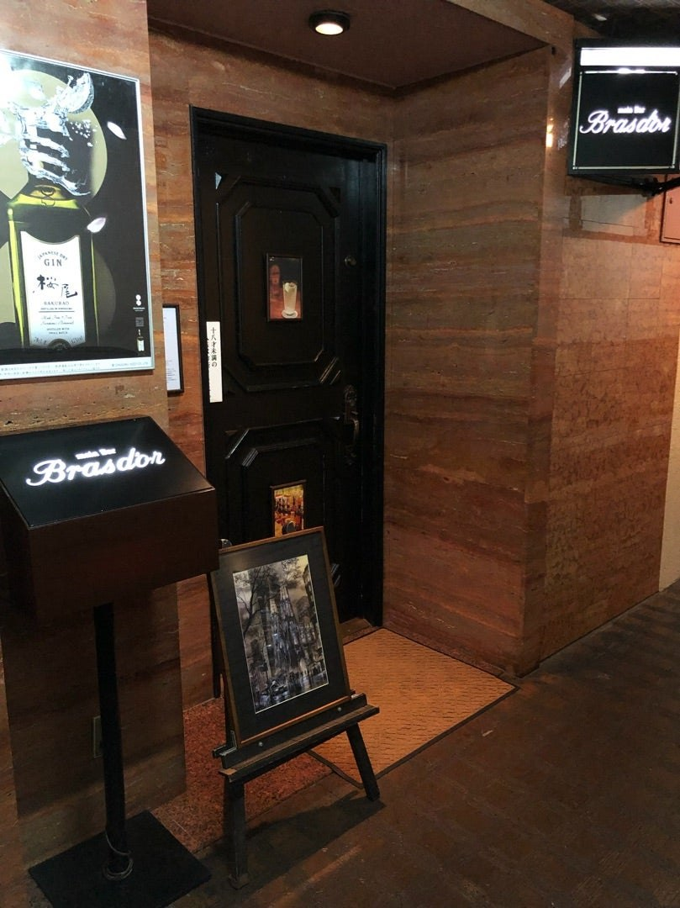

1
2
07:40頃
荷物を預ける
広島駅 コインロッカー
大きな荷物は駅のコインロッカーへ。チェックインは15時からだけど、ホテルに寄るのは映画のあとでOK。手ぶらで動く。
※ロッカーが満杯のときは新幹線口の手荷物一時預かり所へ。
3
4
5
12:00–13:30
ランチ＆移動
広島駅周辺 → イオンモール広島府中
駅周辺で昼ご飯（お好み焼きが本命）。食べたらJRで1駅、天神川駅へ。徒歩5分で広島バルト11に13:30頃には着いておく。
広島駅新幹線口からイオンモール広島府中への直通シャトルバス（片道200円）でも行ける。
6
7
8
17:30–21:00
夕方の広島を歩く
原爆ドーム・平和記念公園 → 本通
ホテルから歩いて平和記念公園へ。夕方の原爆ドームと川沿いをゆっくり歩いて、本通アーケードで買い物と軽く腹ごしらえ。21時のおむかえまで自由時間。
9
21:00
ゆりっぺ おむかえ
広島駅
ここからはふたり時間。駅で合流して、そのまま夜の街へ。
10
21:30頃
ふたりでバー
流川・薬研堀エリア
広島の夜の中心地で一杯。ホテル（羽衣町）からも歩ける距離だから、時間を気にせずゆっくり。金曜の営業時間で8軒セレクト（タップでGoogleマップ）。
ウイスキーBar Kirkwallシングルモルト豊富な本格派。静かなカウンター
カクテルウーズバー Oo's bar深夜4時まで。締めの一杯にも
テラスBar Terrace7階テラス席と夜景。朝5時まで

ペアリングユリイカ料理と酒のペアリング。チャージなし
オーセンティックbar tre路地裏の隠れ家。クラフトカクテル
カクテルBar UNCOEUR広島産フルーツのカクテル。ホテルに近い
カクテルBar Shake Drip銀山町の落ち着いた空間。フルーツカクテル
オーセンティックブラドール2001年開業の老舗。ウイスキー約80種11
深夜
ホテルへ帰宅
Hotel HAGOROMO 203号室
おつかれさま。明日は BUMP OF CHICKEN（広島グリーンアリーナ、開場17:00／開演18:00）。